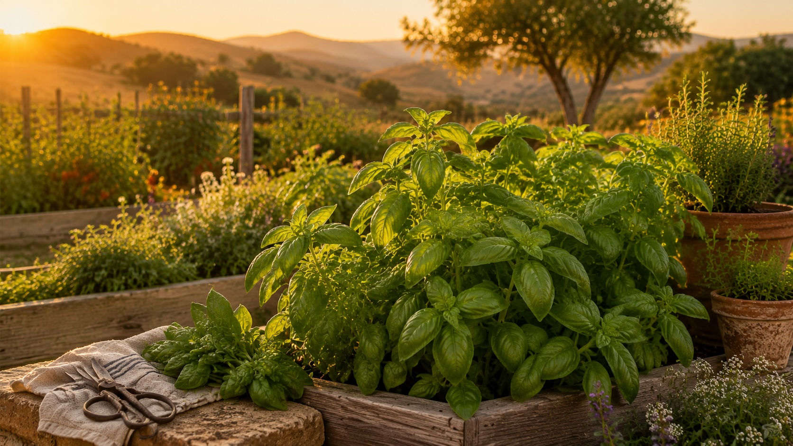
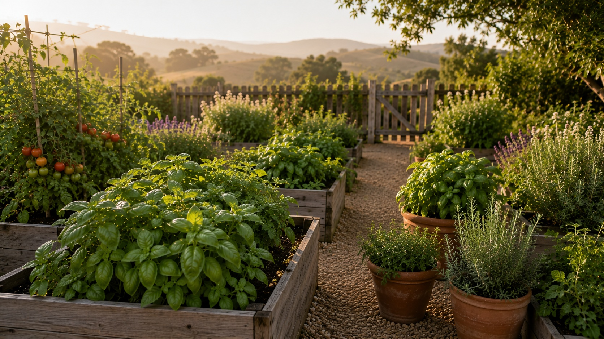
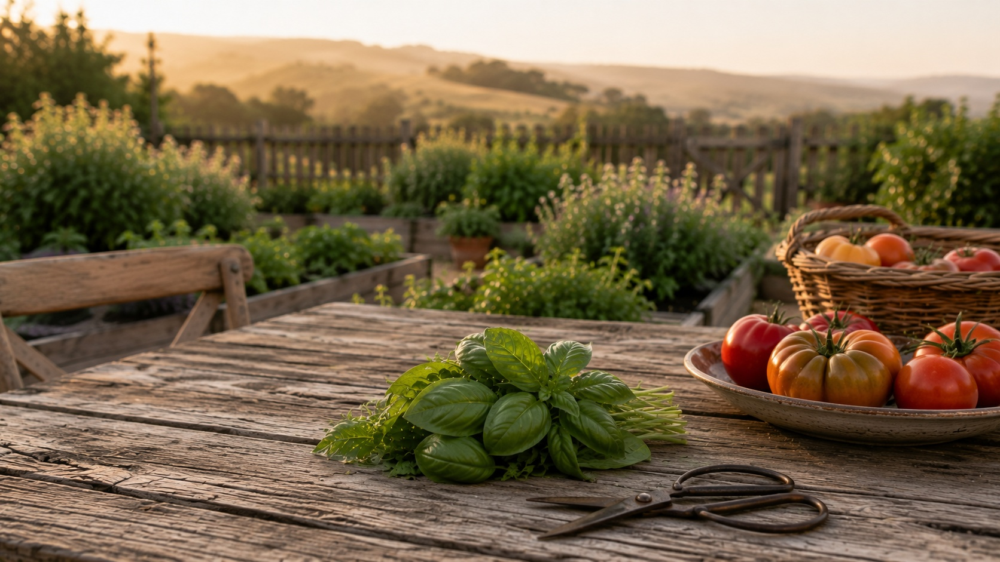
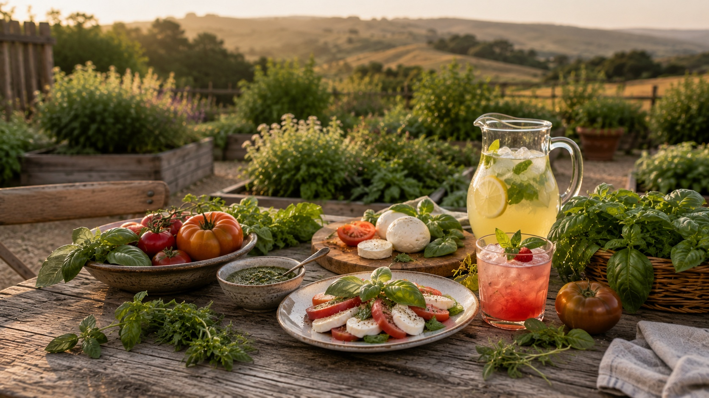

Basil Harvest Hub
Summer Always Gives Us More
Grow, Harvest & Use Basil
Every year I wonder if I planted too much basil. By July, we are making Caprese salads, adding handfuls to pizza night, clipping stems for lemonade, and tucking pesto cubes away for later. Somehow, that abundance always feels like a gift.
Continue the Basil Story
Basil begins in the garden, but it rarely stays there for long. It moves from warm beds to pizza nights, caprese salads, lemonade, pesto days, freezer cubes, and the meals that make summer feel full.
Basil Guide
Grow basil for peak summer flavor, generous harvests, garden meals, fresh drinks, and warm-weather abundance.
Explore the Guide →Harvest & Preserve Basil
Learn when to cut basil, how to harvest generously, and how to turn too much basil into a summer blessing.
Save the Harvest →Basil Simple Syrup
Make a bright, garden-fresh syrup for lemonade, spritzes, mocktails, cocktails, and summer gatherings.
Make the Syrup →Seasonal Recipes
Bring basil into pizza, pasta, salads, drinks, and garden-to-glass recipes built around what is growing now.
Browse Recipes →Summer starts here
Basil is the herb that teaches us to celebrate abundance.
By June, basil begins showing up everywhere around our house. A few leaves become Caprese salad. Another handful goes on pizza night. Before long, we are making pesto because there is simply more basil than we know what to do with.
That is what I love most about basil. It is not only useful. It is joyful. It brings us outside, pulls us into the kitchen, and gives us one more reason to gather around the table.
Basil loves heat, sun, and steady water. In Northern California, our first regular harvests usually begin around June.
Learn to grow →Frequent cutting keeps basil bushy and generous. The more we harvest, the more it seems to give back.
Harvest well →Pesto cubes, frozen herbs, and basil syrup help carry the bright flavor of summer into slower seasons.
Preserve basil →Basil lemonade, cocktails, and mocktails make the harvest feel bright, simple, and worth sharing.
Make a drink →
From our garden
Four basil plants are enough to change the rhythm of summer.
We usually grow about four basil plants between raised beds and containers. Once the heat arrives and the plants settle in, they begin giving us more than we can use fresh.
Every summer I ask myself the same question: what are we going to do with all this basil? Thankfully, that question always leads somewhere good — pesto, pizza night, Caprese salad, lemonade, and little handfuls carried back to the kitchen.
Some of my favorite memories are simple ones: picking basil with Sofia while Stella follows along like she is part of the harvest crew. Those are the moments that make the garden feel woven into our family rhythm.
Around the table
The meals we wait for all year.
Summer tomatoes. Fresh mozzarella. Homemade pizza. Garden vegetables. Cold lemonade. Simple food somehow tastes better when the ingredients come from ten feet away.
Some meals are planned. Others come together because there happens to be basil, tomatoes, and something fresh in the kitchen. Those are often the meals that slow everyone down and remind us why we garden in the first place.
Basil reminds me that gathering around the table matters. Not because everything has to be perfect, but because there is something beautiful about sharing what the garden has given us.
Kitchen first, bar second
Basil belongs at dinner first.
The first thing we usually make is pesto. By August, we are freezing pesto and olive oil cubes so the harvest can keep feeding us after the strongest summer growth has passed.
The drinks come afterward: lemonade by the pool, a cocktail outside, or a simple mocktail that tastes like the garden. Around here, basil reaches the kitchen first and the glass second — and that is exactly how it should be.
Basil at a glance
Summer's happiest herb.
Basil grows fast once the weather warms. Give it sun, steady water, and frequent harvests, and it will keep returning to the table all summer.

Why we keep planting it
Summer abundance in leaf form.
If I could only grow one annual herb, basil would probably be the one. It makes me happy. Maybe that is because basil always means summer has arrived: tomatoes ripening, pizza nights stretching long, pesto on the counter, and meals that somehow turn into conversations. For the full picture on cocktail herbs, see the Cocktail Herb Guide.
Finding your favorite
Basil Varieties for the Kitchen and Glass
Basil variety selection matters because each type brings a different kind of summer to the table. Genovese is classic for pesto and Caprese. Thai basil leans spicy and anise-like. Lemon basil brightens lemonade, gin drinks, and mocktails. Grow more than one if space allows.
In the ground
How to Grow Basil
Basil is warm-weather growing distilled into a single plant. Get it warm, keep it picked, and it will produce generously all summer. Let it get cold, crowded, or flowery, and it fails fast.
What basil needs
- Heat: The most important factor. Basil needs soil and air temperatures consistently above 65°F to grow well. Below this it sulks; below 50°F it blackens. Plant outside only after your last frost date.
- Sun: Full sun — 6 to 8 hours minimum. In partial shade, basil grows slowly and with less fragrance.
- Water: Consistent moisture without waterlogging. Water at the base, not from above — wet leaves in cool conditions invite downy mildew. In containers, check daily in hot weather.
- Soil: Rich and well-draining. Basil, unlike Mediterranean herbs, benefits from a fertile soil — add compost at planting and feed lightly through the season.
- Spacing: 10–12 inches apart in the ground. In containers, one plant per 8-inch pot for best results — supermarket plants packed with multiple seedlings need separating.
- Pinching: Begin pinching flower buds the moment they appear, and continue throughout the season. This is the single most important task for a productive basil plant.
Common growing problems
-
Cold damage and blackeningEven a single cold night below 50°F can blacken basil leaves. Plants bought from supermarkets are often already stressed from cold storage — bring them home, pot them up, and keep them on a warm windowsill for a week before putting outside.
-
Allowing the plant to flowerA flowering basil plant is a plant shifting out of leaf production. Leaves become smaller, tougher, and more bitter. Pinch flowers immediately and consistently — every few days during peak summer. One week of neglect can send the plant fully to flower.
-
Overwatering in cool weatherIn warm weather, basil uses water quickly and needs regular watering. In cool or cloudy spells, the same watering schedule creates waterlogged soil that rots the roots. Adjust watering to the weather.
-
Crowded supermarket potsSupermarket basil pots typically contain 10 to 20 seedlings crammed together. Grown as-is, they compete for nutrients and light and quickly deteriorate. Separate and repot into individual containers — each seedling becomes a full productive plant.
One pot of supermarket basil, properly separated and repotted, becomes 8 to 12 individual plants — enough to supply a whole summer of cocktails. Let the seedlings recover on a warm, bright windowsill for a week before potting up. Feed lightly once established, pinch regularly, and you'll have far more basil than you expect from a $3–4 nursery pot.
From the plant
When and How to Harvest
Basil rewards frequent, decisive harvesting. The more you pick, the more it produces. The less you pick, the sooner it flowers and ends the season.
Always harvest from the top
Cut or pinch the topmost growing tip of each stem — the point where the stem forks and new leaves are emerging. Cutting here causes the plant to branch from just below the cut, producing two new stems where there was one. This is how a basil plant becomes bushy and productive rather than tall and leggy.
Cut above a pair of leaves
When harvesting, always cut just above a node — the point where two leaves meet the stem. The plant will branch from this point. If you cut below the node into bare stem, that section won't regenerate. Take 4 to 6 leaves per cut, leaving at least two pairs of leaves below to sustain the plant's growth.
Harvest in the morning
Essential oils are most concentrated in the morning before the heat of the day begins to volatilise them. Morning basil is measurably more aromatic than basil cut in the afternoon. This is worth observing particularly when making syrup or harvesting for same-day muddling.
Pinch flowers immediately and completely
The moment you see any flower spike forming — even a tiny bud cluster at the top of a stem — pinch the entire flower head off. Don't leave partial flower stems; remove the whole spike back to just above a pair of leaves. Check every 3 to 4 days during peak summer. One missed week is often enough to send the whole plant to flower.
Make a big end-of-season harvest
When temperatures begin to cool in late summer and the plant starts to slow, make one large harvest before the first cold night takes the plant. Strip most of the remaining leaves and make a large batch of basil syrup — freeze it in ice cube trays. This final harvest extends your basil supply weeks or months past the growing season.
Use fresh — basil wilts within hours
Harvested basil leaves wilt quickly at room temperature. For garnishes, cut stems and store them in a glass of water at room temperature — not in the fridge, which blackens the leaves. Use muddling leaves the same day they're picked. For syrup, make it immediately after harvest for the best color and flavor.
Saving summer for later
August Abundance Becomes Tomorrow's Dinner
Eventually there is too much basil. I used to see that as a problem. Now I see it as a gift — pesto cubes, basil syrup, and little jars of summer ready for another day.
In the glass
Using Basil in Drinks
Basil is the most approachable herb to use at the bar. It muddled cleanly, syrups simply, and garnishes beautifully. Here's how to get the most from a summer's worth of leaves.
In the glass
What to Make with Garden Basil
Basil's best drinks are built on simplicity — the herb is vivid enough that it doesn't need many companions. Start with the Basil Smash and build from there.

Featured Cocktail
Strawberry Basil Smash
Muddled fresh basil, summer strawberries, vodka, and lemon. The cocktail that makes the case for basil at the bar.
Make it
Explore More
Visit the Harvest Hub
Discover more herbs, growing guides, and seasonal inspiration for your garden-to-glass journey.
Explore
Related Herb Guide
How to Grow Mint
The most productive plant in the bar garden. Learn how to grow, contain, and harvest mint all season long.
Read the guideLearn from these
Common Basil Mistakes
Basil is generous when you understand it and difficult when you don't. These are the mistakes most worth avoiding.
Our favorite ways to use basil
From pesto bowls to poolside lemonade.
Some summers it feels like basil appears at every meal. Pesto, Caprese salad, lemonade, pizza night, and fresh cocktails all become part of the season. And somehow, even after all of that, there is still enough left to share.

The first thing we make when basil starts producing. Fresh, useful, and easy to freeze in olive oil blocks for later.
Save summer →One sip tastes like late July: bright strawberries, fresh basil, and the kind of summer evening you want to stretch a little longer.
Mix the drink →Simple, refreshing, and impossible not to smile while drinking. It is basil at its most cheerful.
Make it fresh →Beyond the herb bed
There always seems to be enough.
Some of our favorite memories are wonderfully simple: picking basil with Sofia while Stella follows close behind, coming inside with fresh produce, deciding dinner together, and sitting by the pool with lemonade in hand and nowhere else to be.
Basil reminds me that abundance is not measured by how much we have. It is measured by how much we are able to share. It brings us outside, gives us a reason to cook together, and helps turn ordinary meals into moments of connection.
Rooted in the garden. Raised around the table. For us, basil means faith, family, summer abundance, and the simple gift of gathering around what we grow.

Questions answered
Basil Growing FAQ
The questions that come up most often — answered plainly.
Basil is easy to grow in the right conditions — warmth, sun, and consistent moisture. The catch is that it's more demanding about temperature than most bar garden herbs. It sulks in cool weather, blackens in cold, and fails to thrive in anything less than a warm, sheltered spot. Get the heat right and it grows prolifically. Ignore it and it flowers early, becomes bitter, and dies with the first cool night of fall.
Genovese (sweet basil) is the most versatile for cocktail use — the large, glossy leaves are easy to muddle, the flavor is clean and sweet, and it works across gin, vodka, and tequila drinks. Thai basil brings a spicier, more anise-forward character that pairs especially well with tequila and rum, and works in a different set of drinks entirely. Lemon basil adds a light citrus note that makes it excellent in gin fizzes and lemonade cocktails. If you have space, grow all three.
The most common cause is cold — basil bought from a supermarket or planted too early in the season is often already stressed by chilly conditions before it reaches your garden. Other common causes: overwatering (which causes root rot and leaf blackening), underwatering (which causes wilting and bitter flavor), insufficient sun, and allowing the plant to flower without pinching. Supermarket basil plants are also typically several seedlings crowded into a small pot — they need separating and repotting into individual containers to thrive.
Yes, but it needs a genuinely sunny windowsill — a south-facing window in full sun is the minimum requirement. Without enough light, indoor basil becomes leggy and pale, with weak flavor. A grow light dramatically improves indoor results if natural light is limited. Basil on a warm, bright windowsill next to the kitchen sink is a practical and productive bar herb setup for any season.
Pinch off flower buds the moment you see them — before they open. Check every few days during the peak of summer. Pinch the entire flower stem back to just above a pair of leaves. Once basil has flowered and set seed, the plant's leaf production slows significantly and the flavor becomes more bitter. Consistent pinching is the single most important technique for extending a productive basil harvest.
Combine equal parts sugar and water in a saucepan. Once the sugar dissolves, remove from heat, add a large handful of fresh basil leaves (about 20 to 30 leaves), and steep for 15 to 20 minutes. Strain through a fine mesh sieve, pressing gently to extract all the syrup. Cool completely before refrigerating. Basil syrup keeps for about 2 weeks in the fridge — it will darken slightly in color but the flavor remains good. Freeze in ice cube trays for up to 3 months.
Gin is basil's closest spirit partner — the herbal botanical base of gin and the sweet-peppery character of basil complement each other naturally. Vodka is an excellent neutral canvas that lets basil lead. Tequila blanco works especially well with Thai basil, where the anise and pepper notes align with tequila's herbal agave character. Basil is less successful with aged spirits like bourbon or whiskey, where it can read as medicinal against the oak and vanilla.
The Basil Smash is a modern classic cocktail invented by Hamburg bartender Joerg Meyer in 2008. It's gin, fresh lemon juice, simple syrup, and a generous handful of fresh basil leaves — shaken hard with ice and double-strained. The basil is both muddled in the shaker and used as a garnish. It's one of the most celebrated garden-to-glass cocktails in modern bartending and the best single showcase for what fresh basil does at the bar.
No — basil is an annual herb that completes its lifecycle in one growing season and dies with the first frost. It does not overwinter outdoors in temperate climates. However, it self-seeds prolifically if you allow some plants to flower and set seed, so you may find volunteer seedlings appearing the following spring. For a guaranteed supply, start fresh seeds each year or buy seedlings in late spring.
Yes — basil is one of the best muddling herbs in the bar garden. The large, soft leaves release their oils easily with just a few gentle presses. Use 6 to 8 large leaves, press firmly but not aggressively (you want bruising, not pulp), and always double-strain the finished drink through a fine mesh strainer to catch any leaf fragments. Unlike rosemary, basil muddled firmly produces a clean, bright flavor without bitterness.
Drink responsibly. Every mocktail on this site is just as good as the cocktail version. Enjoy the garden. Enjoy the bar. Be safe, be kind, and look after each other.